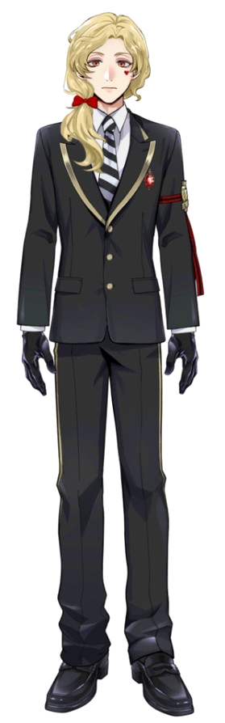

| OTHER NAME(S) | •Mute •Knave •Knave of Hearts •Knabe (Koan) •Knavey-chan •Jacz •Blondie •Sea Bunny (Floyd) •Monsieur Valet (Rook) |
|---|
"
Jacques is a fair-skinned young man whose height is just above average. His eyes are a
burnt orange shade,
and on his left cheek is a small, red marking shaped like a heart. His
hair is light blonde, relatively
long compared to his peers, which he keeps in a loose
ponytail resting on his right shoulder, tied with
a bright red ribbon. His bangs are side
parted on the left side of his face. He's often shown with a neutral,
lost in thought
expression, bordering on a judgmental glare. However when confronted directly, he often
shows
a face of discomfort or embarrassment.
His dorm uniform is similar to the rest of the Heartslabyul students. While in uniform, he
wears eyeshadow the same color as his
heart-shaped marking. The uniform's top
consists of an outer jacket, a patterned vest, and a white, scoop-neck undershirt.
The
jacket is mainly white with a yellow trim and red underlining. His right sleeve is black, while
his left has a black
and white checkerboard pattern, both revealing a pair of short, black
gloves on his hands. The lapels of the jacket are
shaped like a
heart, and are asymmetrically colored black and red. Two yellow shoulder cords hang from his left
shoulder
strap, resembling those worn by army soldiers. On his left lapel is a white rose,
halfway covered in red paint. Also on
the left side of his jacket is a gold, heart-shaped
brooch with a yellow "QH" inside, and a printed symbol of Heartslabyul.
There is also a
playing card displaying the Knave of Hearts, a card unique to Jacques' uniform.
Heartslabyul vests can either
be red or black in color; Jacques chooses to wear a red one.
The vest is patterned with all four card suits, as well as crowns
and roses. Wrapped
around his waist is a yellow and black striped sash, tied together on his left side under a
white circular pin,
with red ruffles and a yellow "H" in the center. His pants are white to
match the jacket, with a yellow stripe running down the
outer seams. Under the pants are
black, simple elegant shoes, making him the only dorm member to wear a different pair of
shoes
not belonging to the original dorm uniform.